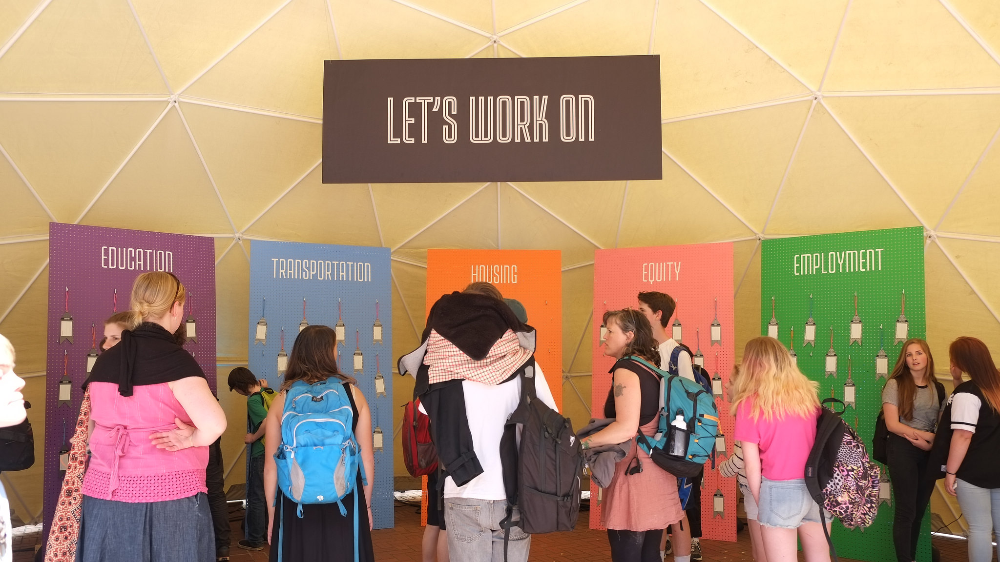
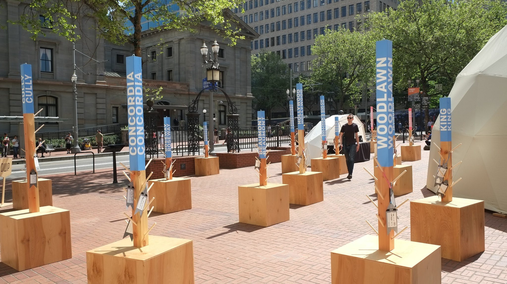
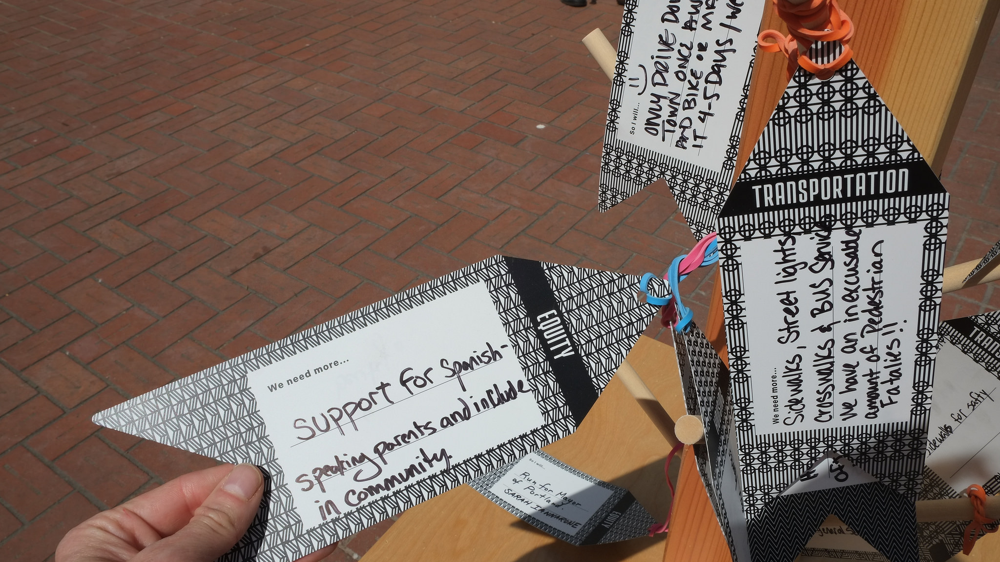
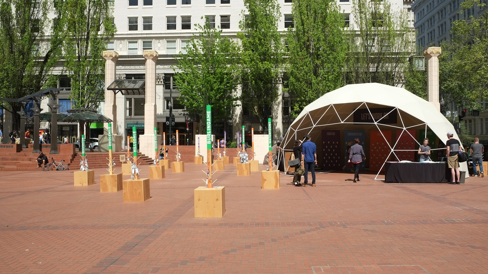

Design Week Portland HQ
In December of 2015, I joined the Headquarters planning team at Design Week Portland. We built something really special.
Over the course of several months, we created an idea for a space in Pioneer Square to interact with Design Week.
We did this by asking everyone what issues in Portland needed the most work. We asked them to take a tag with a specific topic, and write about what needed work. We then had them record their issue by dipping their tag into the "Issue Machine" which took a photo and recorded it for posterity. Finally, we asked them to affix it to one of nearly 50 posts with neighborhood names to spatialize the problem.
We got nearly 700 responses. Housing was far and away the most touchy topic.
After the week was over, we digitized the responses, analyzed them, and then compiled a report. You can read the report here.
Eventually, Tsilli Pines and Kate Bingaman-Burt reported our results to City Council.
For the most part, I think this project was a great success. However, on the last day, there was a lapse in security, and a person came on to the square and took a large number of tags off of their neighborhood posts.
Here is the data that we compiled, which lacks neighborhood names for many responses. And here is the R script which I wrote to analyze the data.
All images courtesy DWP's Flickr.
Return to steveleathers.com